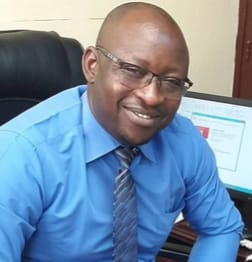

Conseiller d'Intendance Scolaire et Universitaire (CISU)
Planification stratégique • Gestion budgétaire • Marchés publics • Contrôle interne
Conseiller d'Intendance Scolaire et Universitaire (CISU), je possède seize années d'expérience dans l'administration publique. Mon parcours m'a permis de développer une expertise en planification stratégique, gestion budgétaire, gestion logistique, marchés publics et coordination des activités institutionnelles. Soucieux d'accompagner les évolutions numériques, je renforce actuellement mes compétences en développement web et en finance digitale.
Gestion administrative, étude des dossiers (technique, administrative, financière, juriqique etc.), planification et suivi des activités institutionnelles, contrôle et audit interne.
Agent vérificateur à l'Agence comptable du CENOU.
Programmation budgétaire, élaboration des budgtes des structures centrales et déconcentrées et suivi de leur exécution , planification et suivi des activités institutionnelles.
Gestion des ressources éducatives et sanitaires; gestion des marchés publics.
Email : ouedraogowfrancois@gmail.com
Téléphone 1 : +226 79 00 20 76
Téléphone 2 : +226 70 10 43 01
Adresse :
Centre National de la Recherche Scientifique et Technologique (CNRST)
Avenue du Capitaine Thomas Sankara
03 BP 7047 Ouagadougou 03
Burkina Faso
Latitude : 12.38055° N – Longitude : −1.50664° W
GitHub : github.com/OUEDFO